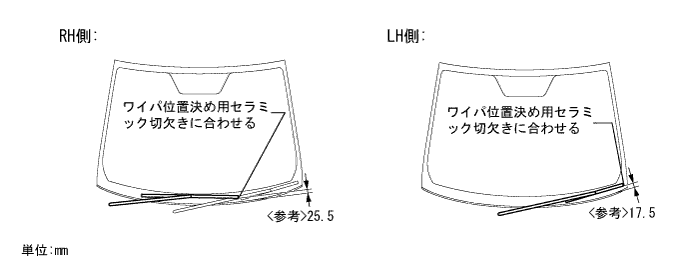

Windshield Wiper Motor Assembly On-vehicle Inspection |
| 1. Inspect Windshield Wiper Motor Assembly |
Automatic Stop Position Inspection
Check the automatic stop position of the wiper arm after operating and then stopping the windshield wiper motor assembly.
